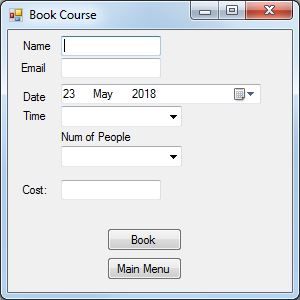
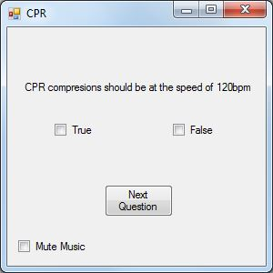

By clicking the Take The Test button the user can take a basic first aid test before takeing the ECD cource. If the user wishes to book a cource then the Book Course button should be selected.
The Help button opens this help page
This is the book course from:

On the book course form enter your personal details in the relevent boxes. The date picker wil not let you select weekends and the time selection is a drop down with the predefined times avalible. The cost will be automaticaly calculated and to confirm your booking click Book
This is an example question:

The questions in the test are true or false. The CPR question has an option to mute the music. You cannot procide to the next question untill ONE answer has been selected.
The results page tells you how meny of the questions you got correct and has a button to click to go back to the main menu.